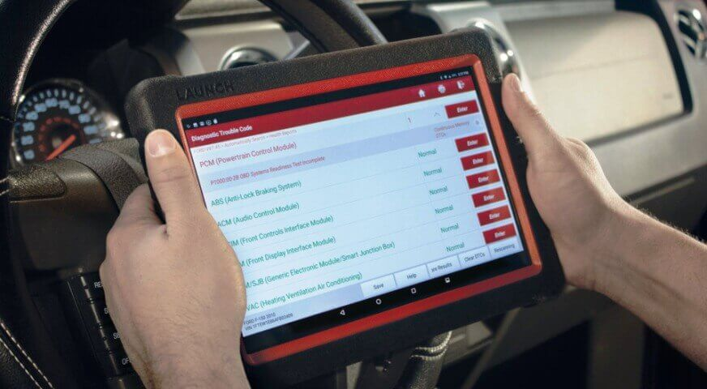
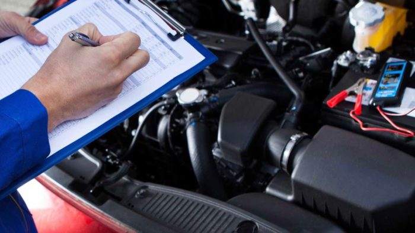

Nuestro taller

Equipado para cualquier reparación


Taller multimarca en Betxí con diagnosis electrónica avanzada. Revisiones oficiales que mantienen tu garantía de fábrica, puesta a punto y reparación de cualquier avería.
Desde revisiones periódicas hasta reparaciones complejas — somos tu taller de confianza para cualquier marca.
Revisión completa siguiendo los intervalos del fabricante. Mantenemos tu garantía de fábrica intacta con piezas homologadas.
Aceites homologados y filtros de calidad OEM. Asesoramiento sobre el tipo de aceite más adecuado para tu motor.
Revisión completa del sistema de frenada. Piezas de primeras marcas con garantía incluida.
Sustitución de embragues, discos y platos de presión. Reparación de caja de cambios manual y automática.
Equipos de diagnosis avanzada compatibles con todas las marcas. Lectura y borrado de códigos de error.
Recarga y reparación del sistema de climatización. Verificación de fugas y sustitución de componentes.
Diagnóstico eléctrico completo, sustitución de baterías y reparación del alternador y motor de arranque.
Revisión de amortiguadores, rótulas, terminales y geometría de la dirección. Alineación incluida.


Pídenos presupuesto sin compromiso. Te respondemos en menos de 2 horas.